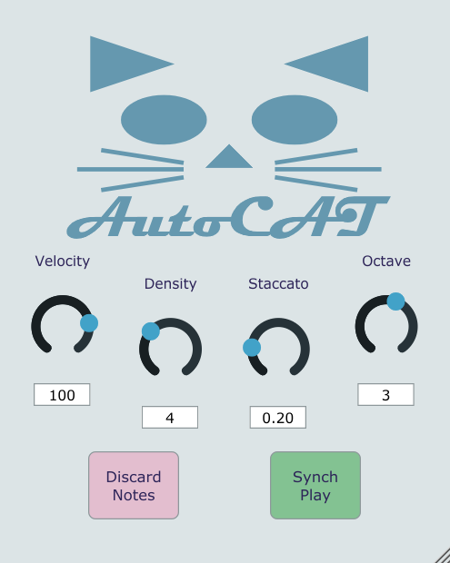

AutoCAT is a VST plugin for generating MIDI chords based on an input stream of MIDI notes. It works in real time, providing some accompaniment while you play, however, the algorithm can only react to past notes, so it will always take one bar to catch up to you. For best results, you can feed into the plugin the midi messages used for your melody, one bar early.
AutoCAT synchronizes itself with its host, playing one chord per bar. Furthermore, AutoCAT has a number of parameters that control how it behaves.
AutoCAT is OpenSource, you can check out its code here.
Marcello's Oboe Concerto in Dm - Adagio (soloist's melody reharmonized by AutoCAT)
To install, simply unzip the Autocat.vst3 into your VST folder.